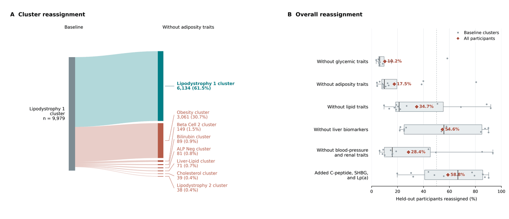
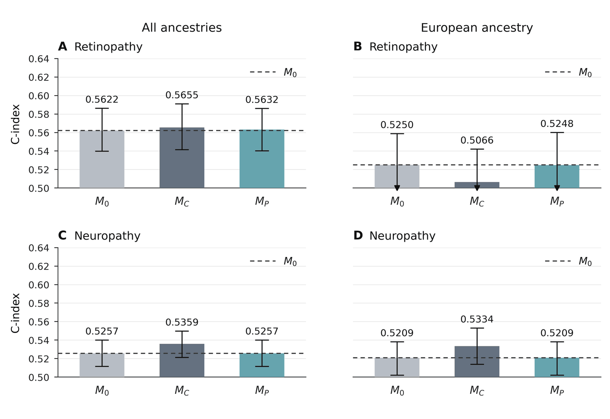
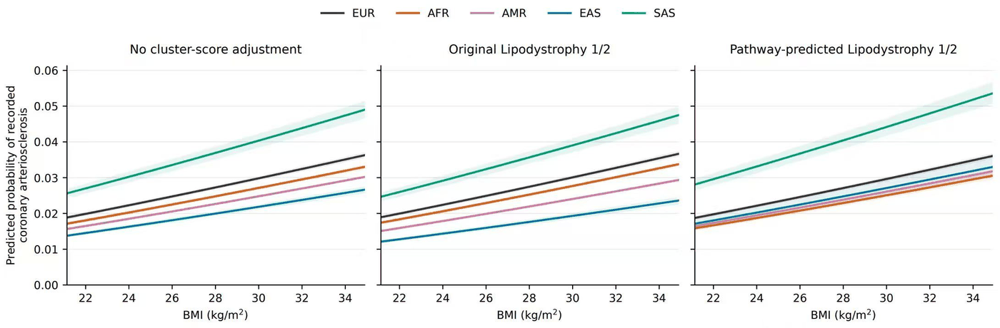

Research project
Pathway-Independent Genetic Signals in Type 2 Diabetes Clusters
From T2D genetic clusters to shared biological pathways
Background
Why look beyond genetic clusters?
Type 2 diabetes (T2D) involves different genetic mechanisms. Genetic clustering groups T2D-associated variants by their patterns of association with metabolic traits, with the aim of identifying distinct disease mechanisms, studying progression and complications, and informing personalized treatment (e.g., Kim et al. 2023; Smith et al. 2024; Suzuki et al. 2024).
However, cluster definitions depend on study choices — the population, phenotype inputs and clustering method can all change an individual's scores and assignments — and a cluster label may obscure shared biology or differences between groups of variants. This makes cross-study comparison and biological interpretation difficult.
-
Consistent features
Pathway polygenic scores (pPGS) use fixed gene-to-pathway mappings within a chosen database.
-
Biological interpretation
Scores are tied to annotated biological processes, rather than cluster labels alone.
-
Beyond one disease
The same features can be examined for other diseases and organ-specific complications.
Study design
Study goals and score types
The project evaluates pPGS as a complementary framework for genetic heterogeneity in T2D, using data from the All of Us Research Program.
- 1StabilityEvaluate across-study and within-study stability of genetic clusters.
- 2Biological interpretationInterpret existing T2D genetic clusters with pathway scores.
- 3Phenotype and complicationsTest phenotype patterns and complication prediction.
- 4Across diseasesAssess relevance beyond T2D, using coronary artery disease (CAD).
Three score types
- Original cluster scores (cPGS)Genotypes → published variant weights → cluster scores
- Direct pathway scores (pPGS)Genotypes → predicted tissue expression (GTEx v8) → Reactome pathways
- Pathway-predicted cluster scoresDirect pPGS → ridge regression → reconstructed clusters
Body mass index (BMI) analyses use the reconstructed cluster scores; complication models use the direct pPGS.
Result 1 · Stability
Genetic clusters depend on study choices
Across-study stability
- AimCompare published cluster definitions.
- ApproachScore the same cohort with the Kim, Smith and Suzuki definitions and standardize the scores.
- ResultThe same person can sit at very different positions in score space depending on the definition used.

Within-study stability
- AimTest whether phenotype inputs change cluster assignments.
- ApproachChange the traits used for clustering while keeping the variants, method and number of clusters fixed.
- ResultRemoving adiposity traits reassigned 38.5% of held-out participants in Lipodystrophy 1, and 17.5% overall.

Result 2 · Biological interpretation
Lipodystrophy clusters share adipose-signaling pathways
- AimTest whether Lipodystrophy 1 and 2 share biological components.
- ApproachReconstruct each cluster score from tissue-specific pPGS using ridge regression, and compare leading variants with leading pathways.
- ResultDespite different leading variants, three of the five top pathways are shared, with visceral adipose contributing most. The remaining top annotations differ in transport and membrane organization.

Result 3 · Phenotype and complications
Clinical patterns and complication prediction
BMI–T2D relationships across ancestries
- AimTest whether reconstructed scores retain a known BMI–T2D pattern.
- ApproachCompare logistic models with no cluster scores, with the original Lipodystrophy 1/2 scores, and with their pathway-predicted counterparts.
- ResultBoth original and reconstructed scores narrow the gap in T2D probability between East Asian (EAS) and European (EUR) ancestry at the same BMI.

Incident complications
Among participants with T2D and no corresponding complication at baseline, three sex-stratified Cox models were compared; only the pathway coefficients were penalized. Models were selected in development and evaluated in validation and in the European-ancestry subgroup without refitting.
| Model | Predictors |
|---|---|
| M0 | Age + genetic ancestry |
| MC | M0 + 12 original Smith cluster scores |
| MP | M0 + direct expression-based pathway scores |
Validation: retinopathy, 12,439 participants / 655 events; neuropathy, 11,716 participants / 1,933 events.
- ResultNeither the cluster scores nor the pathway scores gave a substantial improvement in discrimination over the clinical baseline, in all ancestries or in the European-ancestry subgroup.

Result 4 · Across diseases
Relevance to coronary artery disease
- AimTest whether the same Lipodystrophy scores are relevant to CAD.
- ApproachReuse the T2D-derived scores, without learning CAD-specific weights, in three CAD logistic models.
- ResultThe original scores widen the EAS–EUR gap in recorded CAD probability, whereas the pathway-reconstructed scores markedly narrow it.

Summary
Summary and discussion
| Goal | Finding |
|---|---|
| 1. Stability | Study definitions and phenotype inputs change cluster scores and assignments. |
| 2. Biological interpretation | Lipodystrophy 1 and 2 share visceral-adipose signaling annotations. |
| 3. Phenotype and complications | The BMI–T2D pattern is retained; complication prediction gains are limited. |
| 4. Across diseases | Original and reconstructed scores differ in their CAD adjustment patterns. |